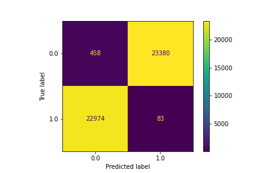
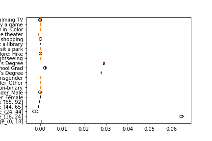
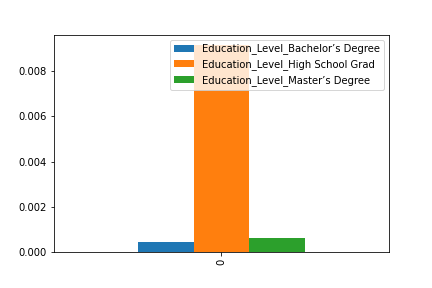

Model Card - IDOOU AI Budget Predicter
Model Details
-- Budget Predicter AI is a model that provides
-- personalized activity recommendation
-- that they can take in an area
Intended Use
-- based on weather, area
-- and users' interest, the application
-- is able to provide the right kind of recommendation
Factors
-- education
-- budget
-- age
-- gender
Metrics
-- balanced accuracy
-- statistical parity difference
-- Theil Index
-- Average odds difference
Training Data
-- 50% randomized data after removing missing values
Evaluation Data
-- 30% validation data for tuning and evaluating performance
Quantitative Analysis
--
--Before...
-- Threshold corresponding to Best balanced accuracy: 0.0100
-- Best balanced accuracy: 0.0125
-- Corresponding average odds difference value: -0.4531
-- Corresponding statistical parity difference value: -0.6036
-- Corresponding equal opportunity difference value: -0.0290
-- Corresponding Theil index value: 0.6846
--After...
-- Threshold corresponding to Best balanced accuracy: 0.0100
-- Best balanced accuracy: 0.4863
-- Corresponding average odds difference value: -0.0138
-- Corresponding statistical parity difference value: -0.0164
-- Corresponding equal opportunity difference value: 0.0000
-- Corresponding Theil index value: 0.7138
--
Results of the AI model after applying the bias mitigation strategy



Ethical Considerations
-- User can opt out of recommendations
-- User can opt out of selected features
-- Controlling limitations of biasness present in data by monitoring population stability index
Caveats and Recommendations
-- Certain users may opt out leading to sampled data being different from population
-- Data drift and feature distribution drift
-- Further ethical AI analyses I would apply beyond this project:
-- Zip Code to ensure certain area are always penalized
Business Consequences
-- Positive Impact:
Users reach a critical mass where they can services differentiated experiences
-- Negative Impact:
Users may distrust the AI solution leading to possible knee jerk reaction on future products